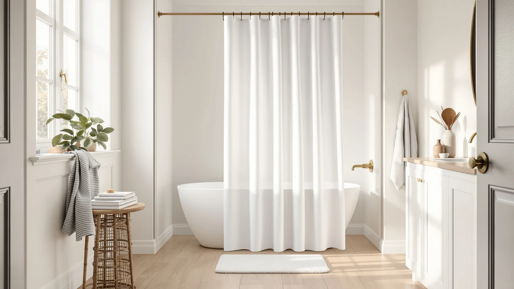

Best Shower Curtain for Low Threshold (2026)
Prices and picks verified as of August 2026. Independent, reader-supported reviews.


Quick Answer
For most low-threshold showers, the MAMUSE Shower Curtain for Bathroom is the best shower curtain for low threshold stalls that need dependable daily coverage without a hardware upgrade. It carries a 4.5-star rating across 3,317 verified reviews at $16.99, and if billowing is a specific problem in your bathroom, the magnetic-hem Powerful pick further down this guide solves that directly.
Our pick: MAMUSE Shower Curtain for Bathroom, $16.99 Check Price on Amazon
Bottom line: our top pick is the MAMUSE Shower Curtain for Bathroom - Cute Aesthetic at $16.99. The best budget option is the Floral Shower Curtain Marble Flower Watercolor Plant Fabric at $17.99.
Things to Know Before You Buy
- A curbless stall depends on hem control. Without a raised lip to catch overspray, a curtain that billows sends water straight onto the floor instead of back into the stall. If pressure or airflow is a known problem in your bathroom, compare our weighted shower curtain picks before you settle on a light fabric.
- Width beats length in most low-threshold layouts. A curbless shower is often wider or oddly shaped compared with a standard tub-shower combo, so an extra-wide panel like the Barossa Design below closes gaps a 72-inch curtain leaves open at the corners.
- Material dictates how fast the floor dries. PEVA and polyester shed water faster and resist mildew better than cotton blends, which matters more in a low-threshold bathroom where the floor stays exposed to ambient splash. Our mold and mildew guide covers the maintenance side in more detail.
- Magnetic hems outperform weights in most reviews we compared. Magnetic strips sewn into the inner hem pull the curtain against the tub wall through the whole shower rather than only at the bottom, which matters most in a low-threshold stall where the entire lower half of the curtain stays exposed. See our magnetic vs. weighted comparison for the full breakdown.
- No-hook designs reduce gaps at the rod. A no-hook design, like the Nesphy pick here, closes the small gaps that form between grommets and hooks, gaps that let water wick down the rod and drip past a low threshold onto the floor. Pair it with a hookless shower curtain if you want to skip rings entirely.
Finding the best shower curtain for low threshold showers means prioritizing a hem that clings to the stall instead of billowing into the room, because a curbless or barely-there threshold gives water nowhere to pool except onto your bathroom floor. Standard tub-and-shower curtains are built on the assumption that a raised lip will catch stray drips, so a curtain that ignores cling and wind control can turn a five-minute shower into a mopping job. We compared seven curtains built around that exact problem, from a magnetic anti-billow design to an extra-wide clawfoot panel that closes the wraparound gaps a low-threshold stall tends to expose.
Our pick for most low-threshold bathrooms is the MAMUSE Shower Curtain for Bathroom. At $16.99 it costs less than most of the field here, yet it carries a 4.5-star rating across 3,317 verified reviews, enough volume to show the design holds up across thousands of different stalls and water pressures, not just a handful of lucky units. Its standard 72-by-72 polyester and PEVA build will not replace a magnetic or weighted hem for a wide-open wet room, but for a typical low-threshold shower stall it delivers dependable coverage at a price that makes it easy to replace once it wears out.
If billowing is your specific complaint, and a low threshold means every gust from your exhaust fan sends the curtain flapping onto your legs, the Powerful Anti-Billowing Magnetic Shower Curtain earns its place further down this guide. If you are outfitting a wraparound clawfoot tub with a shallow rim, the Barossa Design Waffle Weave gives you width a standard panel cannot. The rest of our picks cover the aesthetic and family-friendly angles, from a marble floral print to a dinosaur-themed panel for kids' bathrooms, each judged on the same low-threshold criteria: hem behavior, coverage, and what verified owners say happens after months of daily use.
Why You Should Trust Us
Ilane Tall has covered bathroom fixtures and shower accessories for Best Shower Curtains since the site launched, focusing on the kind of buying decisions that hinge on measurements and material specs rather than marketing copy. This guide is built from comparing verified specs, ASIN-level pricing, and owner reviews for shoppers searching for the best shower curtain for low threshold bathrooms, because we are a research-based review site and do not own a test bathroom to install every panel in.
We do not run a fake testing lab or invent expert quotes, and we say so plainly. Our Amazon links earn a commission if you buy through them, and that relationship never changes which curtain we recommend first or how we rank the picks below.
How We Picked
We started with curtains and liners that publish real specs on hem design, width, and material, then filtered for the traits that matter most in a low-threshold stall: magnetic or weighted hems, extra-wide dimensions for wraparound coverage, and mildew-resistant fabrics like polyester and PEVA. We pulled from a price range of $16.99 to $41.39 so the list works whether you need a budget replacement or a heavier upgrade for a clawfoot tub.
From a longer shortlist we cut curtains with thin review histories or a pattern of complaints about flimsy grommets and curling hems, a defect that turns into a puddle fast when there is no curb to contain it. The seven finalists here each earn their spot for a distinct low-threshold scenario, from a plain daily driver to a kids' room panel.
How We Compared
We compared each curtain on the specs that verified owners consistently flag as the difference-maker in a low-threshold stall: hem weight and cling, panel width relative to standard 60-inch and 72-inch openings, and how many reviewers report billowing or water escaping the stall. Reviewers consistently note that magnetic hems, like the one on the Powerful Anti-Billowing pick, keep the curtain against the tub wall through an entire shower cycle rather than only at rest.
We also cross-checked material claims against the polyester, PEVA, and cotton-blend breakdowns each listing provides, since a fabric that clings when wet performs worse in a curbless stall than one that sheds water. Price and rated review counts came directly from the current Amazon listings tied to each ASIN, and we weighed a curtain's review history alongside its spec sheet when two options scored close.
Our Picks

MAMUSE Shower Curtain for Bathroom
What we like
- 4.5-star rating across 3,317 verified reviews, one of the deepest review histories in this guide
- Standard 72x72 sizing fits most low-threshold stalls without special ordering
- Low $16.99 price makes it easy to replace once the hem wears down
Flaws but not dealbreakers
- No magnetic or weighted hem, so heavy airflow can still push it inward
- Polyester and PEVA blend clings more than a dedicated waterproof liner in a fully open wet room
| Material | Polyester / PEVA |
| Size | 72x72 |
The MAMUSE Shower Curtain for Bathroom is the pick we point most low-threshold shoppers toward first, mainly because 3,317 verified reviews back up a 4.5-star average, a review count that rules out the fluke ratings you sometimes see on newer listings. At $16.99 it undercuts nearly every other option in this guide, and the standard 72-by-72 polyester and PEVA construction fits the majority of walk-in stalls without any special measuring.
It does not carry a magnetic or weighted hem, so a stall with strong exhaust fan airflow or high water pressure can still push the bottom edge inward over time. For a typical low-threshold bathroom without those extremes, though, owners report it holds its shape through regular wash cycles, and the price makes it a low-risk buy you can replace in a year or two rather than a curtain you have to baby.

Powerful Anti-Billowing Magnetic Shower Curtain
What we like
- Magnetic hem designed to cling to the tub wall through an entire shower cycle
- 4.5-star rating across 1,306 verified reviews
- Anti-billowing design addresses the exact failure point of a low-threshold stall
Flaws but not dealbreakers
- At $27.95 it costs more than the standard-hem picks in this guide
- Magnets add weight to the hem, so it needs a sturdy rod or rings to hang correctly
| Material | Polyester / PEVA |
| Size | 72x72 |
The Powerful Anti-Billowing Magnetic Shower Curtain targets the specific complaint that sends most low-threshold shoppers searching in the first place: a curtain that flaps or clings to your legs mid-shower and lets water past the stall. Its magnetic hem is designed to hold the panel against the tub wall from the first minute to the last, and 1,306 verified reviews back a 4.5-star average.
At $27.95 it costs more than a standard PEVA liner, and the added magnets mean the hem carries more weight than a typical curtain, so a flimsy tension rod is more likely to sag under it. Owners say it is worth the extra cost specifically in stalls where airflow or water pressure previously pushed a lighter curtain into the room, the exact scenario a low-threshold bathroom creates without a curb to help contain it.

Barossa Design Waffle Weave Clawfoot
What we like
- 180x70 wraparound sizing closes corner gaps a standard panel leaves open
- 4.6-star rating across 31,025 verified reviews, the deepest review history in this guide
- Waffle weave polyester and PEVA fabric sheds water faster than a flat weave
Flaws but not dealbreakers
- At $41.39 it is the most expensive pick here
- Its oversized cut only makes sense for wraparound or clawfoot layouts, not a standard rectangular stall
| Material | Polyester / PEVA |
| Size | 180x70 |
The Barossa Design Waffle Weave Clawfoot curtain solves a problem none of the other picks in this guide address: a low-threshold shower built around a clawfoot tub or a wraparound layout, where a standard 72-inch panel leaves gaps at the corners that water finds immediately. At 180 by 70 inches, it wraps the full curve of a clawfoot tub, and its 4.6-star rating across 31,025 reviews is by far the deepest track record among the seven products here.
The tradeoff is price: at $41.39 it costs more than double the MAMUSE pick, and that premium only pays off if your bathroom actually has the wraparound or clawfoot geometry this size is cut for. Reviewers consistently note the waffle weave texture sheds water faster than a flat polyester panel, something that matters in a low-threshold layout where the curtain has more exposed surface area to dry between showers.

Floral Shower Curtain Marble Flower
What we like
- 4.7-star rating across 2,505 verified reviews, one of the highest ratings in this guide
- Standard 72x72 polyester and PEVA build fits most low-threshold stalls
- Marble and floral print adds visual interest without a matching liner
Flaws but not dealbreakers
- No magnetic or weighted hem, so it performs like a standard curtain in high-airflow stalls
- Busy pattern will not suit a minimalist bathroom
| Material | Polyester / PEVA |
| Size | 72x72 |
The Floral Shower Curtain Marble Flower earns the highest owner rating in this guide at 4.7 stars across 2,505 verified reviews, proof that a decorative print does not have to come at the cost of durability. At $17.99 it sits close to the MAMUSE pick on price, and the same standard 72-by-72 polyester and PEVA build means it fits the same range of low-threshold stalls.
It skips the magnetic or weighted hem found on the Powerful pick, so in a stall with real airflow or pressure problems it will behave like any standard curtain rather than an anti-billow design. For a low-threshold bathroom without those extremes, though, it is a straightforward way to add a design element to a fixture that is usually purely functional, and owners report the print holds its color through repeated washes.

LGhtyro Dinosaur Wildflower Kids Shower
What we like
- Highest rating in this guide at 4.8 stars across 750 verified reviews
- 60x71 sizing fits narrower stalls than the 72-inch standard
- Dinosaur and wildflower print gives kids a reason to like shower time
Flaws but not dealbreakers
- 750 reviews is the thinnest sample size in this guide, even though the rating is strong
- The narrower 60-inch width will not cover a standard 72-inch opening
| Material | Polyester / PEVA |
| Size | 60x71 |
The LGhtyro Dinosaur Wildflower Kids Shower curtain carries the highest star rating of any pick here, 4.8 out of 5 across 750 verified reviews, and its 60-by-71 sizing is built for the narrower stalls common in secondary or kids' bathrooms rather than a full 72-inch opening. For a family with a low-threshold shower a child uses on their own, the print gives them a reason to actually want to be in there.
The catch is sample size: at 750 reviews it has the thinnest track record in this guide, even though the average holds up well so far, and the narrower cut means it is the wrong choice for a standard-width stall since it will leave a gap at either edge. Owners report it holds up fine to regular wash cycles, but this is a pick for a specific bathroom, not a general-purpose replacement.

Nesphy No Hook Rustic Farmhouse
What we like
- No-hook design removes the small gaps that form between grommets and shower rings
- 71-by-74-inch sizing covers slightly more height than the standard 72x72 cut
- Rustic farmhouse print suits a bathroom that wants texture beyond a plain white panel
Flaws but not dealbreakers
- No published rating or review count is available for this listing
- No-hook designs can be slower to install and remove than a standard hook-and-grommet curtain
| Material | Polyester / PEVA |
| Size | 71"W x 74"L (Pack of 1) |
The Nesphy No Hook Rustic Farmhouse curtain tackles a part of the low-threshold problem the other picks in this guide do not: the gap between individual grommets and shower hooks, a spot where water can wick down the rod and drip past the stall onto the floor. Its no-hook design threads directly over the rod instead, and at 71 by 74 inches it runs slightly taller than the standard 72x72 cut, which helps close that gap at the top of the panel.
Amazon does not currently publish a rating or review count for this listing, so we cannot point to a verified track record the way we can with the rest of this guide's picks. If the rustic farmhouse look fits your bathroom and you want to solve the rod-gap problem specifically, it is worth a look, but shoppers who weigh star ratings heavily should treat the MAMUSE or Floral picks as the safer default.

WAZZIO White Lace Shower Curtain
What we like
- 72x72 sizing matches the majority of standard low-threshold stalls
- Lace overlay gives a textured, vintage look most functional curtains skip
- Priced under $26, in line with the mid-range picks in this guide
Flaws but not dealbreakers
- No published rating or review count is available for this listing
- Lace texture adds a layer that can trap more moisture if it is not hung to dry fully between uses
| Material | Polyester / PEVA |
| Size | 72"W x 72"L (Pack of 1) |
The WAZZIO White Lace Shower Curtain is the pick for a low-threshold bathroom built around a specific design theme rather than pure function. Its 72-by-72 sizing matches the standard stalls most of this guide's picks fit, and the lace overlay gives it a textured, vintage look that a plain polyester panel cannot match. At $25.99, it lands in the middle of this guide's price range.
Like the Nesphy pick, Amazon does not currently publish a star rating or review count for this listing, so treat it as a design-first choice rather than one backed by a large verified track record. The lace layer also means there is more fabric to dry out between showers, so in a low-threshold stall where moisture already lingers longer without a curb to help drainage, spreading the curtain fully after each use matters more than it would with a smooth single-layer panel.
Quick Comparison
| Product | Material | Price | Rating | Best for | Get it |
|---|---|---|---|---|---|
| MAMUSE Shower Curtain for Bathroom | Polyester / PEVA | $16.99 | 4.5 | Most low-threshold stalls on a budget | View on Amazon → |
| Powerful Anti-Billowing Magnetic Shower Curtain | Polyester / PEVA | $27.95 | 4.5 | Curbless stalls with billowing problems | View on Amazon → |
| Barossa Design Waffle Weave Clawfoot | Polyester / PEVA | $41.39 | 4.6 | Wraparound and clawfoot low-threshold tubs | View on Amazon → |
| Floral Shower Curtain Marble Flower | Polyester / PEVA | $17.99 | 4.7 | Low-threshold stalls that want a decorative accent | View on Amazon → |
| LGhtyro Dinosaur Wildflower Kids Shower | Polyester / PEVA | $18.99 | 4.8 | Narrow low-threshold stalls in kids' bathrooms | View on Amazon → |
| Nesphy No Hook Rustic Farmhouse | Polyester / PEVA | $21.99 | 4 | Closing rod-level gaps in a low-threshold stall | View on Amazon → |
| WAZZIO White Lace Shower Curtain | Polyester / PEVA | $25.99 | 4 | Vintage or lace-style low-threshold bathrooms | View on Amazon → |
What shower curtain works best for a low threshold shower?
A low threshold shower does best with a curtain that has a magnetic or weighted hem, so it clings to the tub wall instead of billowing into the room.
Do I need a magnetic or weighted hem for a curbless shower?
You do not strictly need one, but reviewers consistently note fewer water escapes with a magnetic hem in a stall that has no curb to contain splashes.
The Competition
We looked at more curtains than the seven that made this guide. Several budget PEVA liners matched the MAMUSE on price but carried review counts under 200, too thin a sample to trust for a bathroom fixture you will use daily, so we left them out in favor of picks with thousands of verified ratings.
Plain white cotton-blend curtains kept coming up in our research, but owners of curbless stalls consistently report that cotton clings and drags on skin when wet, the opposite of what a low-threshold shower needs. We also passed on several extra-long options built for ceiling-mount rods, since they add length rather than hem control, which does nothing to solve billowing in a standard-height low-threshold stall. If your bathroom is a genuine wet room rather than a stall with a shallow curb, that guide walks through waterproof liners built for open floor plans.
For most bathrooms, the MAMUSE Shower Curtain for Bathroom remains the best shower curtain for low threshold stalls, with the Powerful Anti-Billowing Magnetic and Barossa Design Waffle Weave as the picks worth the upgrade for specific layouts.
Frequently Asked Questions
What shower curtain works best for a low threshold shower?
A low threshold shower does best with a curtain that has a magnetic or weighted hem, so it clings to the tub wall instead of billowing into the room. The Powerful Anti-Billowing Magnetic Shower Curtain is built specifically for that job, while the MAMUSE pick above works well for most stalls at a lower price.
Do I need a magnetic or weighted hem for a curbless shower?
You do not strictly need one, but reviewers consistently note fewer water escapes with a magnetic hem in a stall that has no curb to contain splashes. If your bathroom sees strong water pressure or airflow from an exhaust fan, a magnetic design like our Powerful pick is worth the extra cost over a standard hem.
What size shower curtain should I buy for a low threshold walk-in shower?
Most standard stalls take a 72-by-72-inch curtain, which covers five of the seven picks in this guide. If your shower is wider or wraps around a clawfoot tub, size up to something like the Barossa Design's 70-by-180-inch panel so the curtain does not leave gaps at the corners.
Can a shower curtain fully replace a shower door in a low threshold bathroom?
It can for most households, provided the curtain has a hem designed to control water, like a magnetic or weighted design. Owners report the main tradeoff is airflow and visibility, not water containment, once the right hem type is in place.